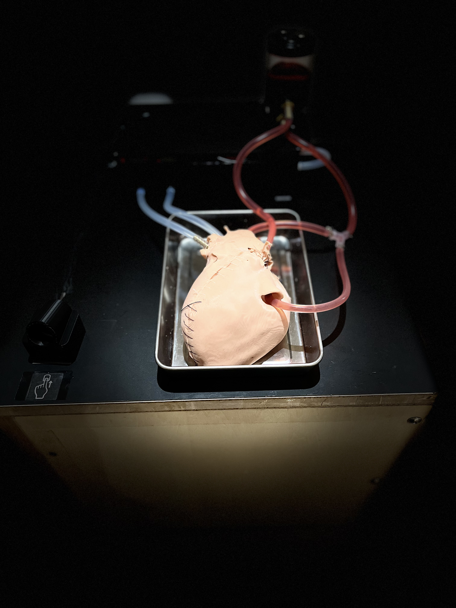
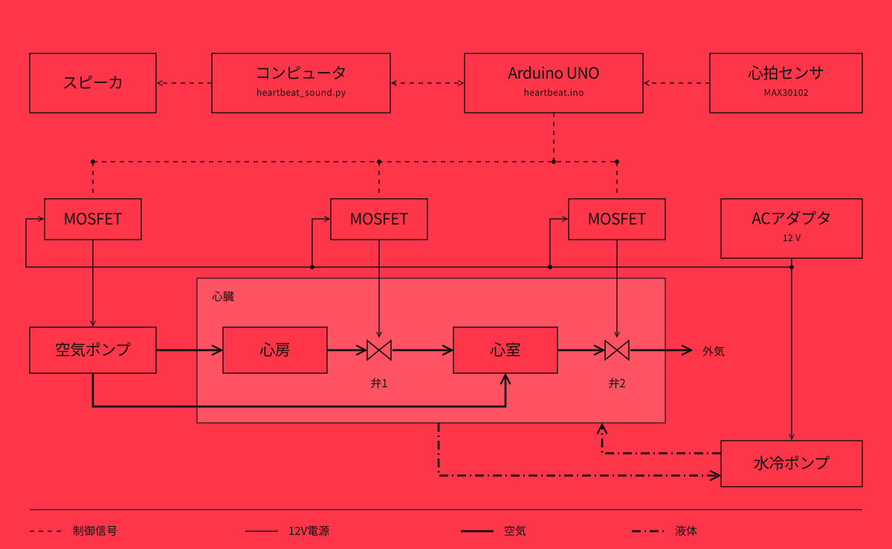

椿 道智
Michitoshi Tsubaki
東京大学大学院 学際情報学府
岡田・小島・河原塚研究室（情報システム工学研究室）

手のひらに、生命の気配。
作品についてその一つに、鼓動があるかもしれません。胸に手を当ててみてください。伝わってくる拍動は、私たちに生きている実感を与えてくれます。けれど、普段は直接触れることのない自分の心臓を、手で確かめてみたいと思ったことはありませんか。
Physical AIが発展すれば、人工物の動作や表情は、生き物と見分けがつかなくなるかもしれません。そのとき、身体の内側から伝わる鼓動は、私たちが生命を感じる手がかりになるのでしょうか。
触れてみる。
生命を、感じてみる。
本作品では、人の心臓の拍動を人工物でできるだけリアルに再現しました。目の前にある心臓を自分のものとして感じながら、触れてみてください。頭では人工物だとわかっていても、手のひらに伝わる鼓動に生命を感じることがあるかもしれません。その感覚を通して、「生きている」と感じる私たちの認識を問い直します。

Michitoshi Tsubaki
東京大学大学院 学際情報学府
岡田・小島・河原塚研究室（情報システム工学研究室）
Ryuhei Sugimoto
東京大学大学院 学際情報学府
葛岡・鳴海・谷川研究室（システム工学研究室）
@misc{tsubaki2026iiiexhibition,
author = {Tsubaki, Michitoshi and Sugimoto, Ryuhei},
title = {{Dynamic Heartbeat}},
year = {2026},
howpublished = {iii Exhibition 2026, The University of Tokyo},
url = {https://github.com/Michi-Tsubaki/dynamic_heartbeat}
}